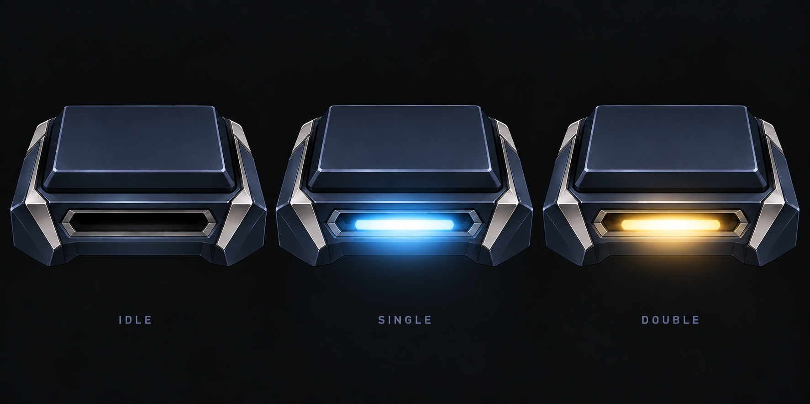
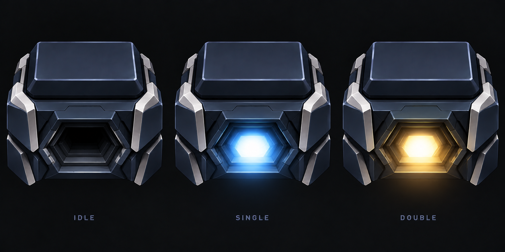
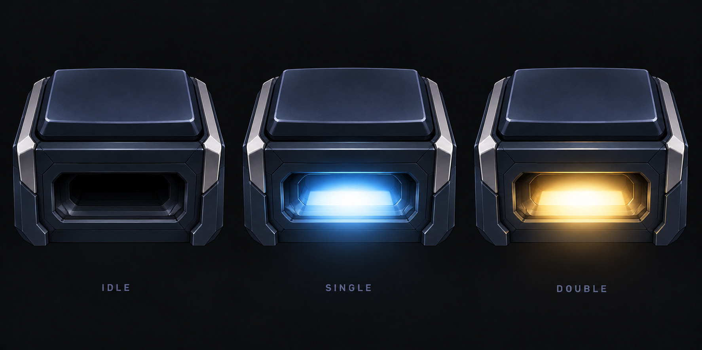
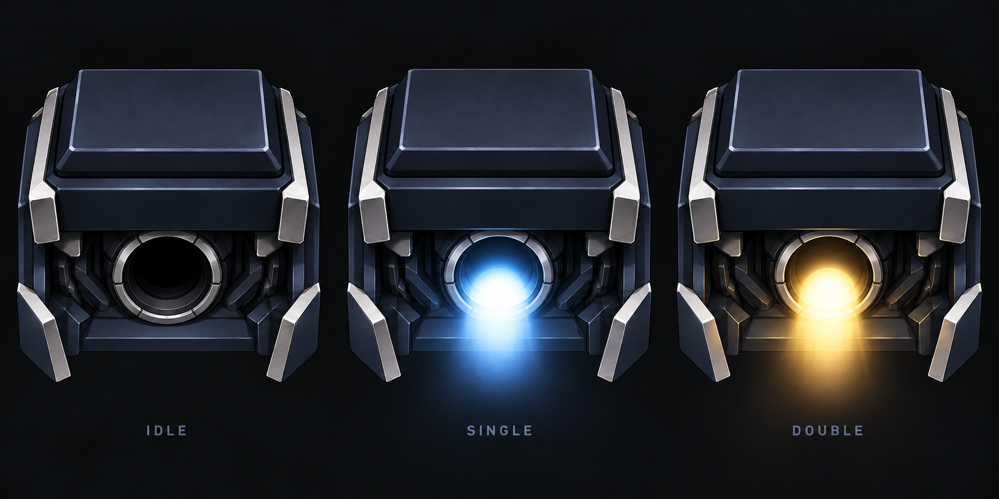

CLASSIC / 2026.09.29
사용자를 향하는 추진부
빛이 화면 앞의 사용자를 향해 퍼집니다. 같은 분출 방향을 유지한 채 버튼 외형을 새로 비교합니다.
유지하는 기준
분출구 하나 · 싱글은 연파랑 · 더블은 금색. 기구와 빛의 모양을 유지하며 색만 즉시 바뀝니다. 이전 3번은 방향의 기준이며 외형은 새로 탐색합니다.
01낮은 일체형
낮은 쐐기형 본체의 앞면에 가로 출구 하나를 넣었습니다. 외곽을 간결하게 잇고 얇은 빛이 앞으로 퍼지는 방향입니다.

02겹친 장갑형
겹친 금속 면이 하나의 각진 출구를 감쌉니다. 앞면의 꺾인 윤곽과 깊이로 기계적인 인상을 만드는 방향입니다.

03매립형 광창
매끈한 앞면 안에 출구 하나를 매립했습니다. 얇은 모서리와 어두운 내부를 두고 빛이 정면으로 드러나는 방향입니다.

방향 기준이 된 이전 3번 펼치기
사용자를 향해 분출되는 방향만 기준으로 삼았습니다. 원형 출구와 버튼 외형은 채택하지 않았습니다.
